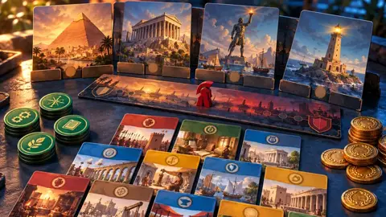

۲٬۴۸۰۵
۲٬۴۸۰۵دانشنامهٔ بازیها
تاریخچه، طراحان، پیچیدگی، امتیاز و سازوکار بازیهای سایت، برگرفته از BoardGameGeek.
۶۵ بازی

شبکه بسازید، صنایع را گسترش دهید و در دنیای انقلاب صنعتی راه خود را پیدا کنید.

یک باغوحش مدرن و علمی را طراحی و بنا کنید تا از پروژههای حفاظت از حیات وحش پشتیبانی کند.

با مدیرانعامل رقیب رقابت کنید تا مریخ را قابل سکونت کنید و امپراتوری شرکتی خود را بسازید.

با یکی از ۱۴ گونهٔ بیگانه کهکشان را گسترش دهید، پژوهش کنید، ارتقا دهید و ساکن شوید.

علم یا ارتش؟ در این نسخهٔ رودررو از ۷ عجایب، چه چیزی انتخاب میکنید تا پیروز شوید؟

با برداشتن زیباترین کاشیها، دیوارهای کاخ خود را هنرمندانه بیارایید.

تاجران دورهٔ رنسانس برای به دست آوردن جواهر، تصاحب دارایی و جلب نظر اشراف با هم رقابت میکنند.

منابع را جمع و معامله کنید تا جزیرهٔ کاتان را آباد کنید؛ یک کلاسیک مدرن.
دادهها از BoardGameGeek، بهروزرسانی ۲۱ مهر ۱۴۰۵. پیچیدگی با نماد وزنه از ۱ (سبک) تا ۵ (سنگین) است.